Линейная регрессия
В этой заметке мы рассмотрим простую и многомерную линейную регрессию, метод наименьших квадратов, а также рассмотрим понятия ковариации и корреляции.
Понятия ковариации и корреляции
Для примера будем использовать набор данных Animals из пакета MASS, описание которого можно получить с помощью команды ?Animals:
> head(Animals)
body brain
Mountain beaver 1.35 8.1
Cow 465.00 423.0
Grey wolf 36.33 119.5
Goat 27.66 115.0
Guinea pig 1.04 5.5
Dipliodocus 11700.00 50.0
> nrow(Animals)
[1] 28
У нас имеется n=28 наблюдений и мы хотим проверить «силу взаимосвязи» (и есть ли такая взаимосвязь вообще) между весом мозга (переменная brain) и весом тела (переменная body). Хорошим правилом считается посмотреть на данные, с которыми мы работаем, поэтому отобразим точки на диаграмме рассеяния:
plot_animals <- function(animals, xlab='', ylab='', main_label='') {
plot(animals$body, animals$brain,
xlab=xlab, ylab=ylab, main=main_label,
col='royal blue', lwd=2)
}
plot_animals(Animals, xlab='body weight', ylab='brain weight',
main='Brain and Body Weights for 28 Species')
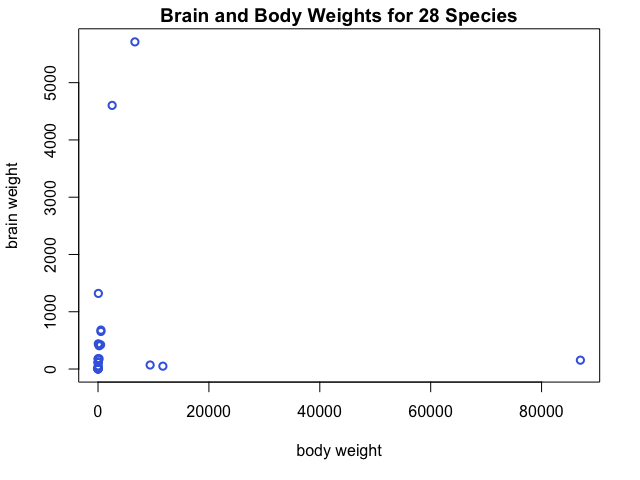
Из полученного графика может показаться, что между наблюдениями (парами x_i и y_i) нет никакой взаимосвязи, поэтому попробуем преобразовать наши данные к log-log шкале:
animals.log <- data.frame(body=log(Animals$body), brain=log(Animals$brain))
plot_animals(animals.log, xlab='log(body weight)', ylab='log(brain weight)',
main='Brain and Body Weights for 28 Species')
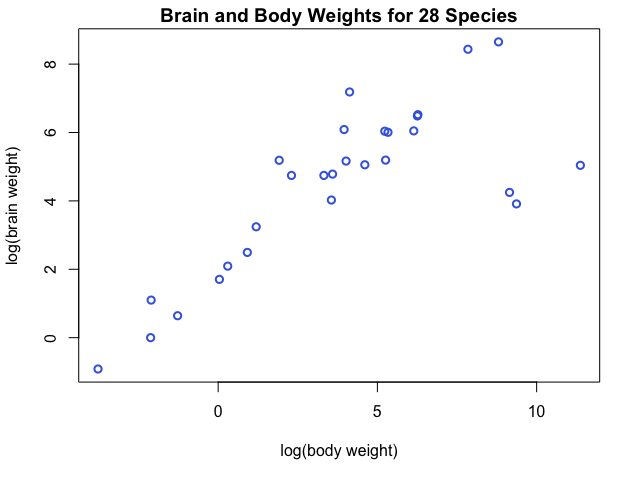
Note
Иногда трудно понять какие именно преобразования нужно провести над имеющимися данными, поэтому эта задача полностью ложится на интуицию аналитика.
Теперь стало более очевидно, что имеется линейная взаимосвязь между наблюдениями. Возникает вопрос: «На сколько эта взаимосвязь сильная?» Чтобы ответить на этот вопрос мы можем посчитать так называемый коэффициент корреляции. Для этого сначала найдем выборочные средние и отобразим их соответствующими линиями на диаграмме рассеяния:
plot_animals(animals.log, xlab='log(body weight)', ylab='log(brain weight)',
main = 'Brain and Body Weights for 28 Species')
# Номера четвертей
text(x=10, y=8, labels="1", col="black", cex=2)
text(x=10, y=0, labels="4", col="black", cex=2)
text(x=-3, y=8, labels="2", col="black", cex=2)
text(x=-3, y=0, labels="3", col="black", cex=2)
# Знаки в четвертях
text(x=7, y=6, labels="+/+", col="dark red", cex=2)
text(x=0, y=6, labels="+/-", col="dark red", cex=2)
text(x=7, y=2, labels="-/+", col="dark red", cex=2)
text(x=0, y=2, labels="-/-", col="dark red", cex=2)
(body.mean <- mean(animals.log$body))
[1] 3.771306
(brain.mean <- mean(animals.log$brain))
[1] 4.425446
abline(v=body.mean, col="dark red", cex=2)
abline(h=brain.mean, col="dark red", cex=2)
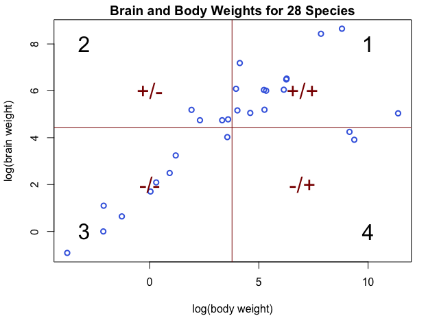
Две линии делят диаграмму на четыре квадранта. Для каждой i-ой точки на графике вычислим следующие величины:
- y_{i} - \bar{y} отклонение каждого наблюдения y_{i} от выборочного среднего;
- x_{i} - \bar{x} отклонение каждого наблюдения x_{i} от выборочного среднего;
- произведение двух величин (y_{i} - \bar{y})(x_{i} - \bar{x}).
y_deviation <- animals.log$brain - brain.mean
x_deviation <- animals.log$body - body.mean
xy_product <- y_deviation * x_deviation
Очевидно, что величины (y_{i} - \bar{y}) положительны для каждой точки в 1 и 2 квадрантах и отрицательны в 3 и 4 квадрантах. Аналогично (x_{i} - \bar{x}) положительны в 1 и 4 квадрантах и отрицательны в 2 и 3 квадрантах. Если линейная связь между y и x отрицательна (с увеличением x уменьшается y), то больше точек в 2 и 4 квадрантах. И наоборот, если связь положительна (с увеличением x увеличивается y), то больше точек в 1 и 3 квадрантах. Таким образом, знак следующего выражения:
которое известно как коэффициент ковариации между y и x, указывает направление линейного отношения между y и x. Если cov(y,x) \gt 0, то связь положительная, иначе отрицательная.
> sum(xy_product) / (nrow(animals.log) - 1)
[1] 7.051974
# Или с помощью функции cov()
> cov(x=animals.log$body, y=animals.log$brain)
[1] 7.051974
К сожалению, cov(Y,X) не может нам много сказать о силе связи, потому что она зависима от изменений в шкале измерения объектов. Для того, чтобы избежать этого недостатка ковариации необходимо нормализовать (стандартизировать) данные прежде чем вычислять ковариацию. Для нормализации Y сначала вычитается выборочное среднее из каждого наблюдения и делится на стандартное отклонение:
где
называется выборочным среднеквадратическим отклонением Y. Легко показать, что нормализованная переменная Z имеет математическое ожидание 0 и стандартное отклонение 1. Аналогично нормализуется X. Ковариация между нормализованными X и Y называется коэффициентом корреляции между X и Y и вычисляется по следующей формуле:
> cov(x=animals.log$body, y=animals.log$brain) / (sd(animals.log$body) * sd(animals.log$brain))
[1] 0.7794935
# Или с помощью функции cor()
> cor(animals.log$body, animals.log$brain)
[1] 0.7794935
par(mfrow=c(1, 2))
animals.log.cor <- cor(animals.log$body, animals.log$brain)
animals.cor <- cor(Animals$body, Animals$brain)
plot_animals(paste('r = ', round(animals.cor, 3)))
plot_animals(paste('r = ', round(animals.log.cor, 3)))
par(mfrow=c(1, 1))
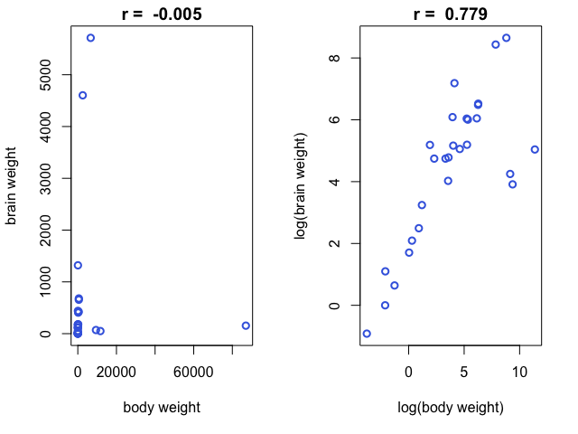
Note
Рассчитываемый нами коэффициент корреляции также известен как коэффициент корреляции Пирсона, есть и другие показатели корреляции, например, коэффициент ранговой корреляции Кендалла.
Таким образом, Cor(Y, X) может быть интерпретирована как ковариация между стандартизированными переменными или отношение ковариации к стандартным отклонениям двух переменных. Коэффициент корреляции является симметричным, то есть: Cor(Y,X) = Cor(X,Y).
В отличии от Cov(Y,X), Cor(Y,X) инвариантна (не зависит от шкалы измеряемых величин) и удовлетворяет условию -1 \leq Cor(Y,X) \leq 1.
Итак, убедившись, что между y и x сущетвует линейная взаимосвязь необходимо построить модель, которая наилучшим образом позволила бы эту взаимосвязь описать, но какую модель следует выбрать?
plot_animals()
abline(lm(animals.log$brain ~ animals.log$body), col="darkred")
abline(a = 2.0, b = 0.8, col='darkred')
abline(a = 3.0, b = 0.3, col='darkred')
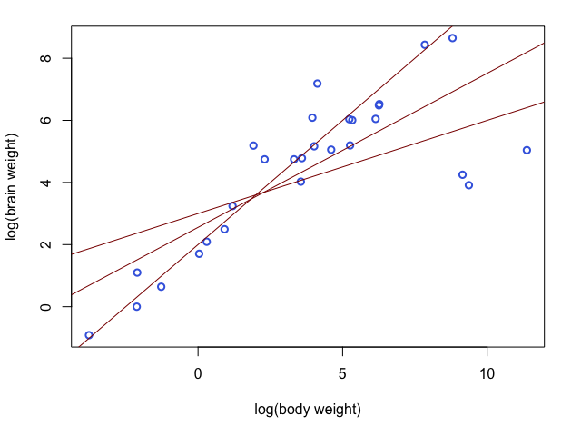
Мы рассмотрим разные линейные модели и начнем с простой линейной регрессии.
Todo
Рассказать про коэффициент корреляции, ближе к -1, 1 и 0. 0 не значит отсутствие зависимости, просто она может не быть линейной, например, Y = 50 - x^2. Рассказать про Anscombe датасет:
data(anscombe)
summary(anscombe)
cor(anscombe)
Простая линейная регрессия
Простая линейная регрессия (least squares regression line) это метод восстановления зависимости между двумя переменными: предсказываемой переменной Y и предиктором X:
Где \beta_{0} это пересечение (показывает значение Y при X = 0), \beta_{1} угол наколна прямой, а \epsilon случайная ошибка. Параметры \beta_{0} и \beta_{1} называются регрессионными коэффициентами.
Метод наименьших квадратов позволяет вычислить параметры \beta_{0} и \beta_{1} минимизируя сумму квадратов ошибок (вертикальных дистанций, см. рисунок ниже). Ошибки могут быть найдены по следующей формуле:
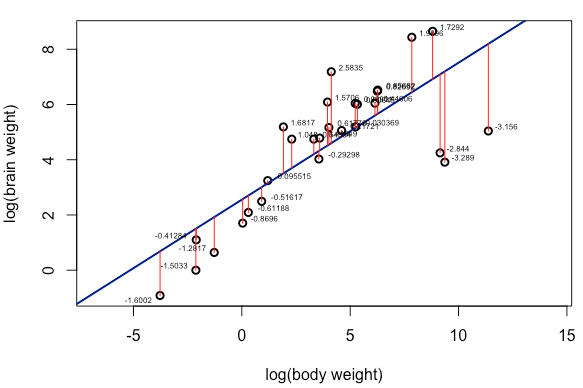
Сумма квадратов ошибок (sum of squares errors) может быть записана как:
Note
В разной литературе можно встретить разные обозначения: SSE (sum of squared errors of prediction) == RSS (residual sum of squares) == SSR (sum of squared residuals).
Наша задача найти такие значения \hat{\beta_{0}} и \hat{\beta_{1}}, которые минимизируют SSE(\beta_{0}, \beta_{1}):
library(manipulate)
plotMininizeError <- function(beta0, beta1) {
error <- sum((beta0 + beta1 * animals.log$body - animals.log$brain)^2)
plot(animals.log$body, animals.log$brain,
xlab='log(body weight)', ylab='log(brain weight)',
main=paste(round(error, 3)))
abline(a = beta0, b = beta1, col='darkred')
}
manipulate(plotMininizeError(b0, b1),
b0=slider(0, 3, step=0.1),
b1=slider(0, 2, step = 0.1))
Чтобы найти \beta_{0}, \beta_{1}, которые минимизируют SSE, необходимо решить:
Откуда получим:
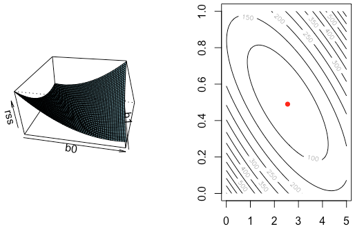
Note
Линейная регрессия (или как ее еще иногда называют метод наименьших квадратов) была впервые описана Гауссом в 1795 году (Гауссу было всего 18 лет) и позже опубликована в его знаменитой книге «Theoria Motus Corporum Coelestium in sectionibus conicis solem ambientium» (Теория движения небесных тел), где он изложил методы вычисления планетных орбит.
В случае простой линейной регрессии коэффициент \beta_{1} можно вычислить и более простым способом. Угол наклона прямой считается как \frac{dy}{dx}, откуда получим:
> (beta1 <- cor(animals.log$body, animals.log$brain) * sd(animals.log$brain) / sd(animals.log$body))
[1] 0.4959947
> (beta0 <- mean(animals.log$brain) - beta1 * mean(animals.log$body))
[1] 2.554898
> plot_animals(animals.log, xlab='log(body weight)', ylab='log(brain weight)',
main = 'Brain and Body Weights for 28 Species')
> abline(a = beta0, b = beta1, col="darkred")
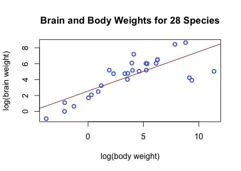
В R такую модель можно построить с помощью функции lm:
> model <- lm(formula = brain ~ body, data = animals.log)
> summary(model)
Call:
lm(formula = brain ~ body, data = animals.log)
Residuals:
Min 1Q Median 3Q Max
-3.2890 -0.6763 0.3316 0.8646 2.5835
Coefficients:
Estimate Std. Error t value Pr(>|t|)
(Intercept) 2.55490 0.41314 6.184 1.53e-06 ***
body 0.49599 0.07817 6.345 1.02e-06 ***
---
Signif. codes: 0 ‘***’ 0.001 ‘**’ 0.01 ‘*’ 0.05 ‘.’ 0.1 ‘ ’ 1
Residual standard error: 1.532 on 26 degrees of freedom
Multiple R-squared: 0.6076, Adjusted R-squared: 0.5925
F-statistic: 40.26 on 1 and 26 DF, p-value: 1.017e-06
y ~ x называется формулой. Символ ~ в формуле следует читать как «описывается переменной». К объяснению вывода результатов команды summary мы еще вернемся. А пока ответим на вопрос «Как с помощью полученной модели делать прогнозы?».
Итак, наша оцененная модель в общем виде может быть записана следующим образом:
Подставив значения для оцененных коэффициентов \hat{\beta_0} и \hat{\beta_1} получим:
Теперь мы можем использовать эту модель для прогнозов.
library(manipulate)
plotPrediction <-function(newx) {
model <- lm(brain~body, data=animals.log)
plot(animals.log$body, animals.log$brain,
xlab='log(body weight)', ylab='log(brain weight)',
main=paste('y = ', round(predict(model, newdata=data.frame(body=newx)), 3)))
abline(model, lwd=2, col='dark blue')
points(c(newx), c(min(animals.log$brain)-0.35), lwd=3, col='darkred')
points(c(newx, newx), c(min(animals.log$brain)-0.35,
model$coefficients[1] + newx*model$coefficients[2]),
type='l', lwd=2, col="darkred", lty=2)
points(c(min(animals.log$body)-0.4, newx),
c(model$coefficients[1] + newx*model$coefficients[2],
model$coefficients[1] + newx*model$coefficients[2]),
type='l', lwd=2, col="darkred", lty=2)
points(c(min(animals.log$body)-0.6),
c(model$coefficients[1] + newx*model$coefficients[2]),
lwd=3, col='darkred')
}
manipulate(plotPrediction(new_x), new_x = slider(min(animals.log$body), max(animals.log$body)))
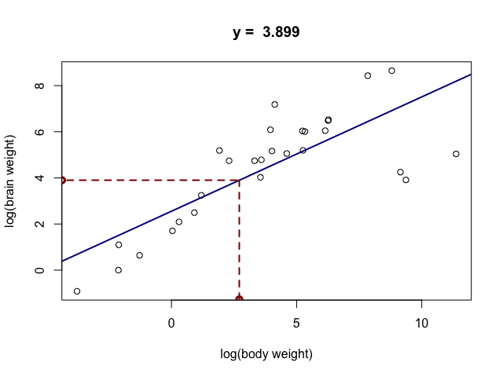
Нам необходимо вернуться к исходной шкале измерения, чтобы делать легко интерпретируемые прогнозы:
Оценка полученной модели
Коэффициент детерминации (R-square) - это доля дисперсии зависимой переменной, объясняемая рассматриваемой моделью. Более точно — это единица минус доля необъяснённой дисперсии (дисперсии случайной ошибки модели, или условной по признакам дисперсии зависимой переменной) в дисперсии зависимой переменной:
model <- lm(animals.log$brain ~ animals.log$body)
(r2 <- 1 - sum((animals.log$brain - predict(model))^2) / sum((animals.log$brain - mean(animals.log$brain))^2))
[1] 0.6076101
Одной из проблем коэффициента детерминации является то, что его значение только увеличивается при добавлении в модель новых переменных, поэтому при сравнении моделей с разным числом переменных может быть ошибочно принято решение, что модель с большим числом переменных лучше чем модель с меньшим числом переменных.
Скорректированный коэффициент детерминации (Adjusted R-square) - выражает долю дисперсии зависимой переменной, объясняемую регрессионной моделью с заданным набором независимых переменных, скорректированный с помощью штрафа, накладываемого на модель при увеличении числа переменных:
(r2_adj <- 1 - ((1-r2)*(nrow(animals.log) - 1)) / (nrow(animals.log) - 1 - 1))
[1] 0.5925182
Также для оценки модели используют среднеквадратичную ошибку, которая характеризует отклонение реальных данных от линии регрессии и измеряется в тех же единицах, что и зависимая переменная (y):
Квартет Энскомба
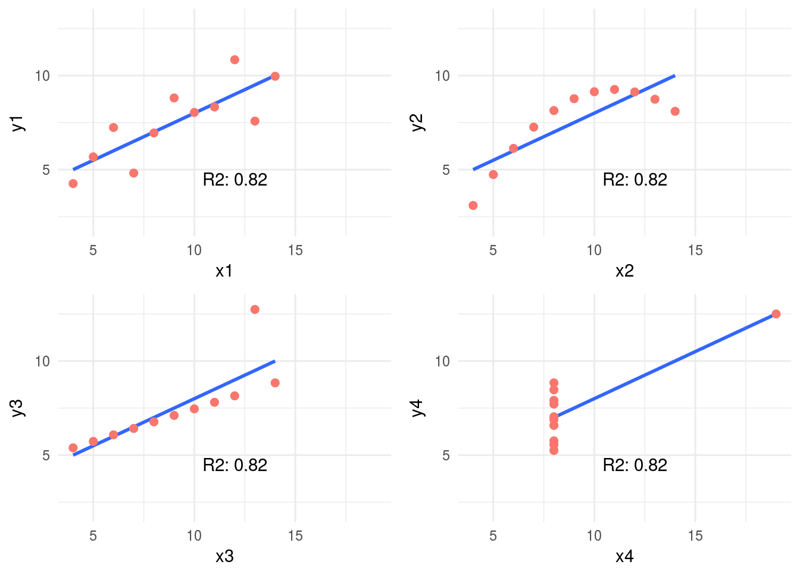

Связь МНК и ММП
Рассмотрим принцип максимального правдоподобия (maximum likelihood estimation) на примере задачи подбрасывания монетки, а затем применим его к задаче линейной регрессии. Пусть у нас имеется:
- y - число решек при подбрасывании монетки n раз;
- n - число бросков;
- p - вероятность выпадания решки (неизвестна);
- \hat{p} - оценка вероятности выпадания решки.
Предположим, что мы не знаем истинную вероятность выпадания решки (0.5), поэтому попробуем ее оценить. По интуиции:
Например, если выпало 3 решки при 5 бросках, то:
Теперь давайте попробуем подтвердить нашу интуицию математически. Эксперимент с подбрасыванием монетки может быть описан с помощью Биномиального распределения:
Читаем как: «Вероятность того, что решка выпадет y раз при заданной вероятности p и числе бросков n».
Для y=3 и n=5 получим:
Но мы все еще не знаем p. Принцип максимального правдоподобия заключается в том, чтобы найти такое значение p для имеющихся y и n, при котором мы получим максимальное значение для P.
Итак, зафиксируем y и n, тогда функция правдоподобия (likelihood) будет выглядеть следующим образом:
Для наглядности будем перебирать значения p \in [0;1] с шагом 0.1 и для каждого значения вычислим функцию правдоподобия:
library(graphics)
probs <- seq(0,1,0.1)
likelihoods <- dbinom(3, size=5, prob=probs)
plot(probs, likelihoods, type='l', xlab = 'probability', ylab = 'likelihood')
points(probs, likelihoods, col = 'royal blue')
segments(probs, rep(0, length(probs)), probs, likelihoods, lty=3, col='royal blue')
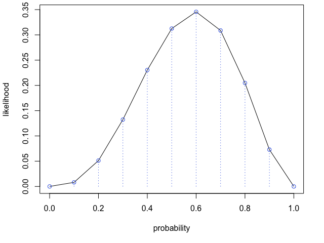
Из графика хорошо видно, что мы достигаем максимума при p = 0.6, но мы не будем каждый раз перебирать параметр p.
Иногда для упрощения расчетов берут логарифм, таким образом, максимизируя log-likelihood:
И наконец продифференцируем функцию относительно параметра p и приравняем ее нулю:
Note
Достаточно подробное описание можно найти в статье The Principle of Maximum Likelihood.
Теперь кратко рассмотрим метод максимального правдоподобия применительно к линейной регрессии:
Предположим, что остатки имеют нормальное распределение \epsilon_i \sim \mathcal{N}(0, \sigma^2), тогда:
В случае нормального распределния функция плотности вероятности для случайной величины X выглядит следующим образом:
Тогда мы можем записать функцию плотности вероятности для каждой величины Y_i как:
Для n точек (x_i, y_i) мы можем записать функцию правдоподобия от трех параметров \beta_0, \beta_1, \sigma^2 следующим образом:
Наша задача найти такие параметры \beta_0, \beta_1 и \sigma^2, которые максимизируют L(\beta_0, \beta_1, \sigma^2). Для простоты вычислений будем считать log-likelihood:
Note
По интуиции должно быть понятно, что \log \ell \rightarrow max это тоже самое, что и SSE(\beta_0, \beta_1) \rightarrow min.
Как и в задаче с подбрасыванием монетки возьмем частные проиводные по параметрам \beta_0, \beta_1 и \sigma^2 и затем приравняем нулю:
Откуда получим:
Многомерная линейная регрессия
Запишем в матричной форме:
Опять хотим минимизировать квадрат ошибки:
Уже по известной схеме:
Откуда получим:
Последнее уравнение называется нормальным уравнением (normal equation).
n <- length(y)
X <- cbind(x, rep(1,n))
B <- solve(t(X)%*%X)%*%t(X)%*%y
x.test <- seq(1,5, 0.25)
y.hat <- B[2]+B[1]*x.test
lines(x.test, y.hat,col="red")
Робастность регрессии
par(mfrow=c(1,2))
plot(brain ~ body, data=animals.log,
xlab='log(body weight)', ylab='log(brain weight)')
points(animals.log[animals.log$body > 8 & animals.log$brain < 6,],
pch=16, col="darkred")
model <- lm(brain ~ body, data = animals.log)
abline(model, lwd=2, col='dark blue')
plot(brain ~ body, data=animals.log,
xlab='log(body weight)', ylab='log(brain weight)')
points(animals.log[animals.log$body > 8 & animals.log$brain < 6,],
pch=16, col="darkred")
model <- rlm(brain ~ body, data=animals.log)
abline(model, lwd=2, col='dark blue')
par(mfrow=c(1,1))
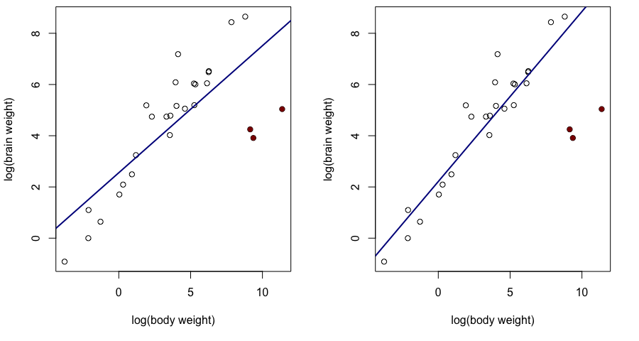
Полиномиальная регрессия, ridge-регрессия и LASSO-регрессия
par(mfrow=c(1,2))
set.seed(123456)
x <- seq(-2, 5, length.out=20)
y <- sin(x) + runif(length(x), -0.25, 0.25)
fit <- lm(y ~ x)
plot(y ~ x, lwd=2, main="Ordinary Least Squares")
abline(fit, lwd=2, col='dark blue')
plot(resid(fit) ~ fitted(fit), lwd=2, ylab="Residuals", xlab="Fitted", main="Residuals vs Fitted values")
abline(0, 0, lwd=2, col='dark blue')
par(mfrow=c(1,1))
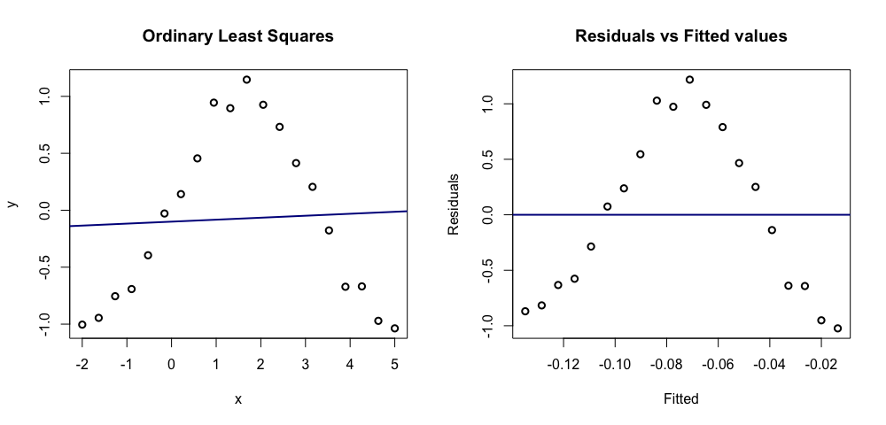

par(mfrow=c(3,3))
poly.1 <- lm(y ~ poly(x, 1))
poly.7 <- lm(y ~ poly(x, 7))
poly.14 <- lm(y ~ poly(x, 14))
plot(y ~ x, lwd = 2, main="")
curve(predict(poly.1, data.frame(x=x)), add=TRUE, col="royalblue")
plot(y ~ x, lwd = 2, main="")
curve(predict(poly.7, data.frame(x=x)), add=TRUE, col="darkgreen")
plot(y ~ x, lwd = 2, main="")
curve(predict(poly.14, data.frame(x=x)), add=TRUE, col="darkred")
plot(y ~ x, lwd = 2, main="")
curve(predict(poly.1, data.frame(x=x)), add=TRUE, col="royalblue")
points(x1, y1, lwd=2, pch=2)
plot(y ~ x, lwd = 2, main="")
curve(predict(poly.7, data.frame(x=x)), add=TRUE, col="darkgreen")
points(x1, y1, lwd=2, pch=2)
plot(y ~ x, lwd = 2, main="")
curve(predict(poly.14, data.frame(x=x)), add=TRUE, col="darkred")
points(x1, y1, lwd=2, pch=2)
plot(resid(poly.1) ~ fitted(poly.1), lwd=2, ylab="Residuals", xlab="Fitted")
abline(0, 0, lwd=2, col='dark blue')
plot(resid(poly.7) ~ fitted(poly.7), lwd=2, ylab="Residuals", xlab="Fitted")
abline(0, 0, lwd=2, col='dark blue')
plot(resid(poly.14) ~ fitted(poly.14), lwd=2, ylab="Residuals", xlab="Fitted")
abline(0, 0, lwd=2, col='dark blue')
par(mfrow=c(1,1))
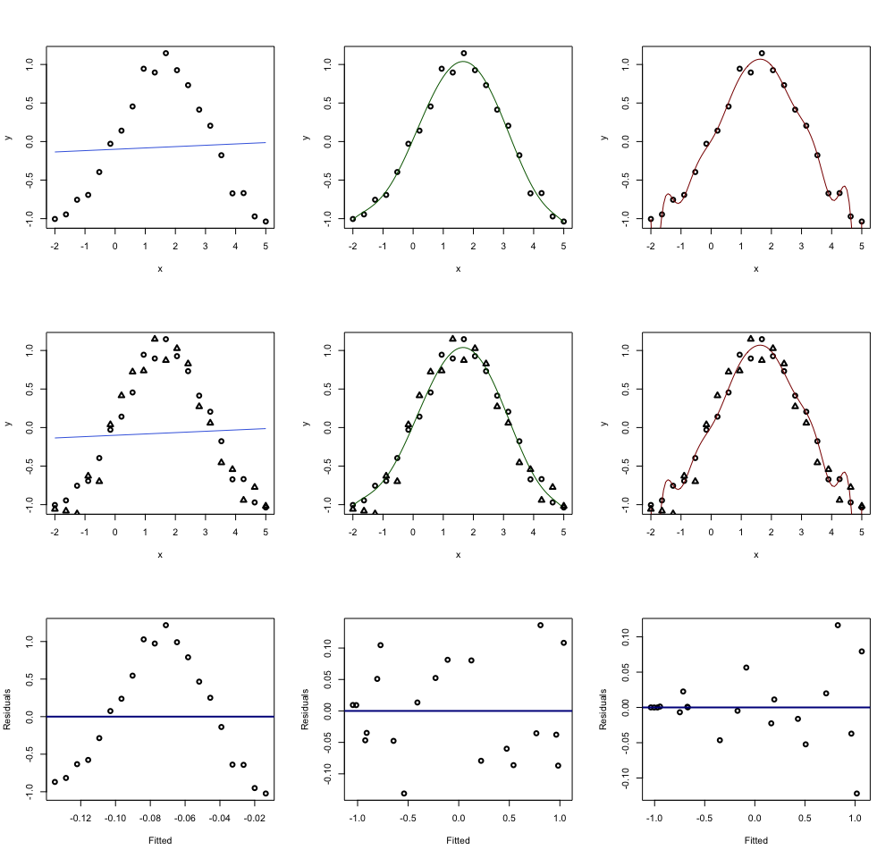
Простая модель очень плохо описывает наши данные и это называется underfitting, полиномиальная модель же наоборот, прошла через каждую точку и в точности описала все данные, это называется overfitting.
poly.2 <- lm(y ~ poly(x, 2))
poly.3 <- lm(y ~ poly(x, 3))
poly.4 <- lm(y ~ poly(x, 4))
poly.5 <- lm(y ~ poly(x, 5))
poly.6 <- lm(y ~ poly(x, 6))
poly.8 <- lm(y ~ poly(x, 8))
poly.9 <- lm(y ~ poly(x, 9))
poly.10 <- lm(y ~ poly(x, 10))
poly.11 <- lm(y ~ poly(x, 11))
poly.12 <- lm(y ~ poly(x, 12))
poly.13 <- lm(y ~ poly(x, 13))
anova(poly.1, poly.2, poly.3, poly.4, poly.5, poly.6, poly.7, poly.8, poly.9,
poly.10, poly.11, poly.12)
Analysis of Variance Table
Model 1: y ~ poly(x, 1)
Model 2: y ~ poly(x, 2)
Model 3: y ~ poly(x, 3)
Model 4: y ~ poly(x, 4)
Model 5: y ~ poly(x, 5)
Model 6: y ~ poly(x, 6)
Model 7: y ~ poly(x, 7)
Model 8: y ~ poly(x, 8)
Model 9: y ~ poly(x, 9)
Model 10: y ~ poly(x, 10)
Model 11: y ~ poly(x, 11)
Model 12: y ~ poly(x, 12)
Res.Df RSS Df Sum of Sq F Pr(>F)
1 13 6.7847
2 12 1.7598 1 5.0249 68.7312 0.01424 *
3 11 1.6804 1 0.0794 1.0859 0.40679
4 10 0.2022 1 1.4782 20.2190 0.04607 *
5 9 0.1992 1 0.0030 0.0416 0.85728
6 8 0.1548 1 0.0444 0.6075 0.51732
7 7 0.1542 1 0.0006 0.0079 0.93723
8 6 0.1542 1 0.0000 0.0004 0.98568
9 5 0.1473 1 0.0069 0.0937 0.78845
10 4 0.1470 1 0.0003 0.0042 0.95421
11 3 0.1469 1 0.0001 0.0017 0.97091
12 2 0.1462 1 0.0007 0.0090 0.93296
---
Signif. codes: 0 ‘***’ 0.001 ‘**’ 0.01 ‘*’ 0.05 ‘.’ 0.1 ‘ ’ 1
Ridge-регрессия
Note
Регуляризация Тихонова.
Мы видели, что если в модель включить слишком много параметров, то она склонна к переобучению. В случае гребневой регрессии (ridge regression) мы включаем дополнительный параметр \lambda для регулирования сложности модели. Простыми словами, чем больше значение \lambda, тем проще модель мы хотим получить.
Ранее мы минимизировали:
А теперь будем минимизировать:
где \lambda - параметр регуляризации, который надо как-то выбрать.
Если взять производную, то получим:
x <- seq(-2, 5, length.out=15)
y <- sin(x) + runif(length(x), -0.25, 0.25)
plot(y ~ x, lwd = 2)
x1 <- seq(-2, 5, length.out = 20)
y <- sin(x1) + runif(length(x1), -0.25, 0.25)
points(x1, y1, col="darkred", lwd=2, pch=17)
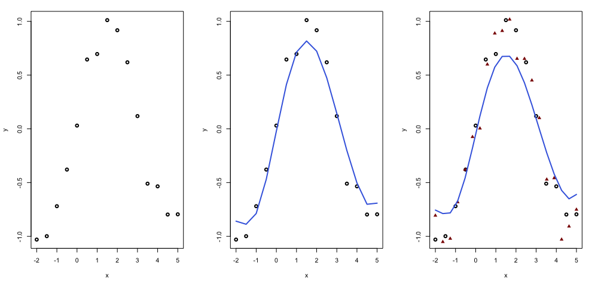
cv.ridge <- cv.glmnet(poly(x, 7), y, alpha=0, family='gaussian')
points(x1, predict(cv.ridge, poly(x1, 7), s=cv.ridge$lambda.min), type="l", col="royalblue", lwd=2)
LASSO-регрессия
library(lars)
lasso.model <- lars(x = poly(x, 14), y = y, type = "lasso")
plot(lasso.model)
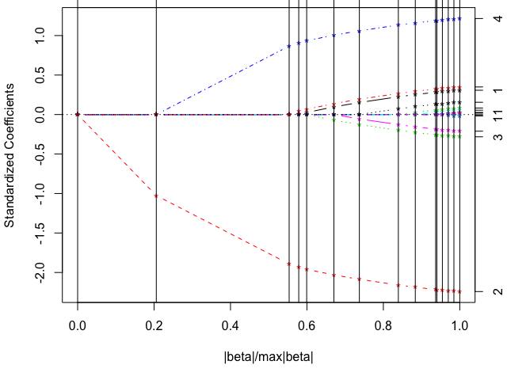
x1 <- seq(-2, 5, length.out = 20)
y1 <- sin(x1) + runif(20, -0.25, 0.25)
y.pred.lasso <- predict(lasso.model,
poly(x1, 14),
s=best.fraction,
type="fit",
mode="fraction")
plot(y ~ x, lwd = 2, main="")
points(x1, y.pred.lasso$fit, type="l", col="royalblue", lwd=2)
points(x1, y1, col="darkred", lwd=2, pch=17)
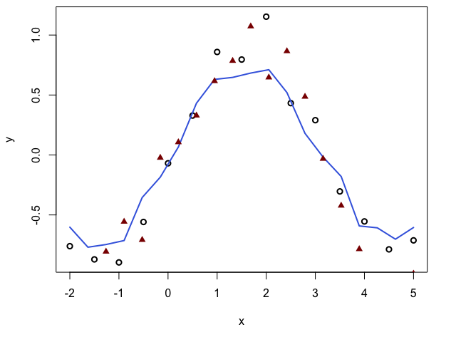